%%{init: {'theme': 'base', 'themeVariables': {'background': '#FFFFFF', 'primaryColor': '#FFFFFF', 'primaryBorderColor': '#E5E5EA', 'primaryTextColor': '#1D1D1F', 'lineColor': '#86868B', 'secondaryColor': '#F5F5F7', 'tertiaryColor': '#FFFFFF', 'mainBkg': '#FFFFFF', 'nodeBorder': '#E5E5EA', 'clusterBkg': '#F5F5F7', 'clusterBorder': '#E5E5EA', 'titleColor': '#1D1D1F', 'edgeLabelBackground': '#FFFFFF'}}}%%
flowchart LR
A[MCT1: 5-Stufen-CPU] --> B[MCT3: SoC-Peripherie]
B --> C[Heute: High-End-Kern]
style C fill:#FFFFFF,stroke:#E2001A,stroke-width:2px !important
07 · Moderne CPU-Architekturen
Mikrocomputertechnik 3 · Von Pipelining-Limits über Out-of-Order zur Branch Prediction
Prof. Dr.-Ing. Daniel Klünder
Willkommen zu Block 7!
- Willkommen zur siebten Vorlesung in Mikrocomputertechnik 3
- Bisher: RAM, Caches, Interrupts, Busse, DMA — das SoC ist ausgestattet
- Peripherie und Transfers können autonom laufen; der Engpass wandert zurück zum Kern
- Heute: wie High-End-CPUs intern mehr Rechenleistung aus demselben Takt holen
Anknüpfung: DMA-Labor
Kurz-Recap aus Block 6 (Vertiefung im Übungsblatt):
- DMA kopiert Arrays autonom; Polling blockiert die CPU stark
- Ein Heartbeat aus
main()kann weiterlaufen. Das beweist keine Last von null - Bus-Mastering und Cycle Stealing: DMA teilt sich den Bus mit der CPU
- Folge: weniger ALU-Zeit für stupides Kopieren — mehr Zeit für echte Berechnung
Zurück in die CPU
- Fokus: Ausführungsgeschwindigkeit im Kern
- Weg von Systembus, MMIO und Peripherie-IRQs
- Rein: Pipeline, ALU, Assembler auf Befehlsebene
- Metriken und Hardware-Parallelität innerhalb eines Kerns
Refresher MCT1: 5-Stufen-Pipeline
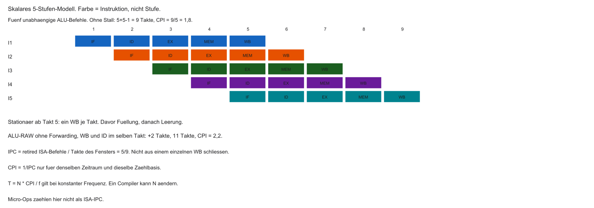
Klassische RISC-Pipeline (Harris/Harris):
| Stufe | Name | Aufgabe |
|---|---|---|
| IF | Instruction Fetch | Befehl holen |
| ID | Decode | Dekodieren, Register lesen |
| EX | Execute | ALU |
| MEM | Memory | Datenspeicher |
| WB | Write Back | Ergebnis ins Registerfile |
Nach dem Füllen strebt der Durchsatz gegen ein Retire je Takt. Fünf Befehle brauchen im Modell ohne Stall \(N+k-1 = 9\) Takte, mittleres CPI \(= 1{,}8\).
Metriken: IPC und CPI
- IPC: retired ISA-Instruktionen pro Core-Takt im betrachteten Fenster
- Execution-Completion und Retire können in verschiedenen Takten liegen
- Micro-Ops sind keine ISA-IPC
- CPI = Takte / retired Instruktionen. CPI und IPC sind nur dann Kehrwerte
- Laufzeit bei konstanter Frequenz \(f\) im selben Fenster:
\[ T = N \times \mathrm{CPI} / f \]
Limit der skalaren Pipeline
- Ideal ohne Stalls/Hazards/Misses: \(\mathrm{IPC} = 1\), \(\mathrm{CPI} = 1\)
- Eine skalare Ein-Issue-Pipeline: strukturell kein \(\mathrm{CPI} < 1\)
- Ein Pfad → Befehle im Gänsemarsch
- Realität oft schlechter (\(\mathrm{CPI} > 1\)) durch Bubbles und Hazards
Die Taktraten-Mauer (Power Wall)
- Idee der 2000er: Frequenz massiv erhöhen (GHz-Wettrennen)
- Vereinfacht \(P_{dyn} \approx \alpha C V^{2} f\). Leckleistung ist davon getrennt
- Keine feste Frequenzgrenze aus dieser Formel. Breitere Kerne brauchen mehr Ports, Scheduler und Bypass
- CPI verbessern ist ein Weg, kein kostenloser Ersatz für Takt
Die Leitfrage des Tages
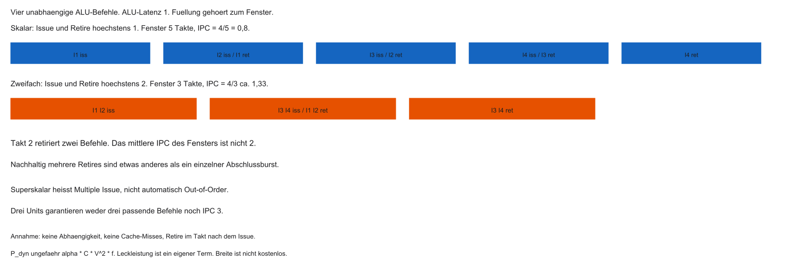
- Taktfrequenz: physikalisch begrenzt
- Skalare Pipeline: Ideal \(\mathrm{CPI} = 1\) (mit Stalls oft \(> 1\))
- Wie kann der Kern langfristig mehr als eine ISA-Instruktion je Takt retiren?
- Antwort: Parallelität innerhalb des Kerns (ILP ausnutzen)
Das Zeitdiagramm oben ersetzt die Ein-Takt-Skizze. IPC wird über das ganze Fenster gerechnet.
Agenda
- Grenzen des Pipelining
- ILP und Superskalarität
- Out-of-Order Execution
- Branch Prediction
- Spekulation und Security (Spectre/Meltdown)
- Labor-Ausblick (Compiler / Godbolt)
Lernziele Block 7
- Skalare vs. superskalare Pipeline erklären
- Datenabhängigkeiten RAW, WAW, WAR unterscheiden
- Register Renaming und Reorder Buffer (ROB) einordnen
- Warum Branches tiefe Pipelines treffen
- Rolle von Compiler-Scheduling (
-O3)
Instruction-Level Parallelism (ILP)
- ILP: wie viele Befehle eines Programms theoretisch parallel laufen könnten
- Beispiel ohne Abhängigkeit:
- Unabhängige Operationen → auf getrennten Execution Units im selben Takt denkbar
Datenabhängigkeiten: RAW
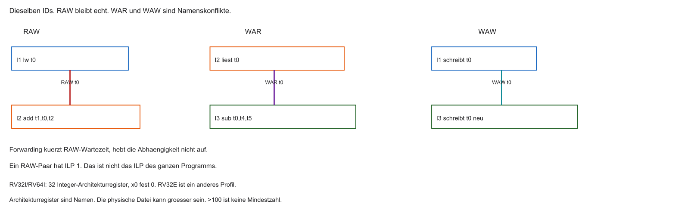
- True Dependency / Read-After-Write (RAW): Befehl 2 braucht Ergebnis von Befehl 1
- Dieses Paar hat ILP 1. Das ist keine Aussage über das ganze Programm
- Forwarding verkürzt die Wartezeit und hebt die RAW-Kante nicht auf
Statisches vs. dynamisches Scheduling
- Statisch (Compiler): Befehle vorab umordnen, Abhängigkeiten auseinanderziehen
- Dynamisch (Hardware): zur Laufzeit unabhängige Befehle finden und an die Units ausgeben (Issue)
- Compiler kennt u. a. Cache-Misses zur Laufzeit nicht → dynamisches Scheduling oft mächtiger
Superskalare Architekturen
- Skalar: typisch ein Issue pro Takt
- Superskalar: Multiple Issue. Das ist noch nicht Out-of-Order
- Fetch-Bytes, Decode, Issue, Ports und Retire-Breite sind verschiedene Größen
- Pipeline wird „breiter“: mehrspurige Autobahn statt einspurigem Fließband
Mehrere Execution Units
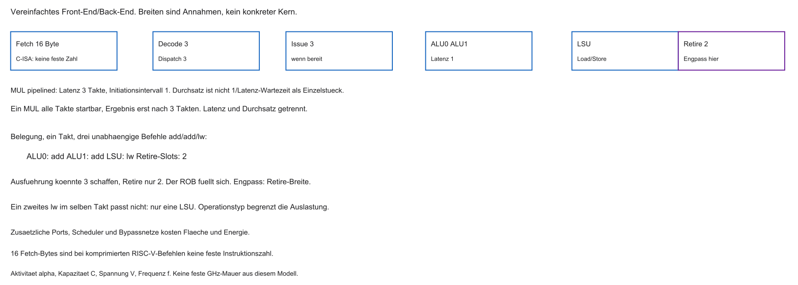
- Zwei Integer-ALU und eine LSU sind das vereinfachte Modell aus der Abbildung
- Ein pipelinierter Multiplizierer trennt Latenz und Initiationsintervall
Multi-Issue Fetch und Decode
- Fetch holt zum Beispiel 16 Byte. Mit der C-Erweiterung ist das keine feste Instruktionszahl
- Decode prüft Abhängigkeiten zwischen den Kandidaten und verteilt auf Units
- Aufwand der Abhängigkeitsprüfung wächst stark mit der Issue-Width
In-Order Superskalar
- Start-Reihenfolge = Programmreihenfolge (z. B. ältere In-Order-Kerne)
- Unabhängige Nachbarn können gemeinsam starten
- Stoppt ein früher Befehl (Hazard/Miss), stauen dahinter auch Unabhängige
Problem: Cache-Miss in-order
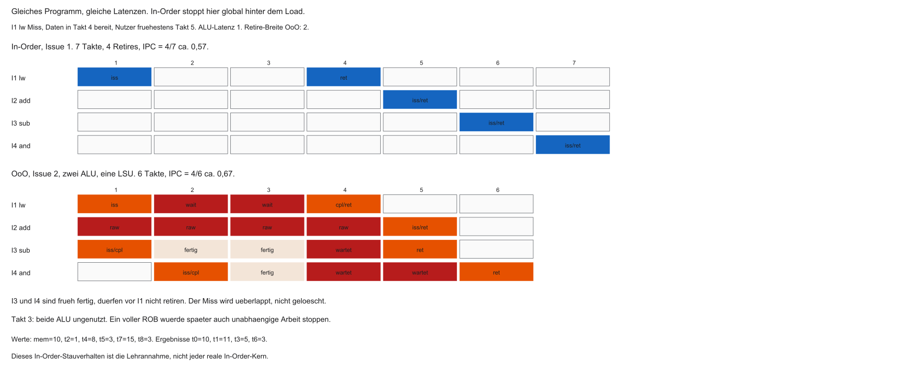
- Lehrannahme hier: der In-Order-Kern gibt hinter dem wartenden Load nichts weiter aus
- Reale In-Order-Kerne dürfen davon abweichen
- Der Miss bleibt auch bei OoO bestehen. Unabhängige Befehle können ihn nur überlappen
Falsche Abhängigkeit: WAW
Write-After-Write:
- Keine RAW-Abhängigkeit der Operanden
- Dennoch: Schreibreihenfolge muss erhalten bleiben — sonst falscher Endwert in
t0
Falsche Abhängigkeit: WAR
Write-After-Read:
subdarft0nicht zu früh überschreiben, bevoraddgelesen hat- Verhindert unkritische Überholvorgänge ohne weitere Maßnahmen
Engpass: 32 ISA-Register
- RV32I und RV64I: 32 Integerregister
x0–x31.x0ist fest 0 - Das sind Architektur-Namen, keine physischen Kisten. RV32E hat ein anderes Registerprofil
- Wiederverwendung erzeugt WAR/WAW. Erweiterungen bringen weitere Registerdateien
Aufgabe — RAW und Breite
Warum bleibt die Kante von I1 nach I2 bestehen, obwohl I3 und I4 unabhängig sind? Warum folgt aus zwei ALU nicht IPC 2?
Out-of-Order Execution (OoO)
- Dynamisches Scheduling: blockierte Befehle „parken“
- Unabhängige spätere Befehle dürfen vorgezogen werden
- Issue in datenabhängiger, dynamisch gewählter Reihenfolge. Der Kern bleibt getaktet
Datenfluss-Maschine
- Instruktion „feuert“, wenn Operanden da sind — nicht nur wenn der PC sie erreicht
- Der Miss blockiert die Nutzer des Load. Unabhängige Befehle können vorbeilaufen, bis Issue-Queue oder ROB voll sind
- „Nur Abhängige warten“ gilt nicht ohne diese Grenzen
Drei Phasen der OoO-Pipeline
- In-Order Front-End: Fetch / Decode
- Out-of-Order Back-End: Execute
- In-Order Retire (Commit): Ergebnisse programmgerecht sichtbar machen
Dazwischen: große Puffer (Queues, ROB).
%%{init: {'theme': 'base', 'themeVariables': {'background': '#FFFFFF', 'primaryColor': '#FFFFFF', 'primaryBorderColor': '#E5E5EA', 'primaryTextColor': '#1D1D1F', 'lineColor': '#86868B', 'secondaryColor': '#F5F5F7', 'tertiaryColor': '#FFFFFF', 'mainBkg': '#FFFFFF', 'nodeBorder': '#E5E5EA', 'clusterBkg': '#F5F5F7', 'clusterBorder': '#E5E5EA', 'titleColor': '#1D1D1F', 'edgeLabelBackground': '#FFFFFF'}}}%%
flowchart LR
A[In-Order\nFetch/Decode] --> B[(Instruction\nQueue)]
B --> C[Out-of-Order\nExecute]
C --> D[(Reorder\nBuffer)]
D --> E[In-Order\nCommit]
style C fill:#FFFFFF,stroke:#E2001A,stroke-width:2px !important
Front-End und Renaming
- Mehrere Befehle aus dem I-Cache holen und dekodieren
- Vor dem Chaos: Register Renaming gegen WAW/WAR
- Architektur-Register der ISA ≠ physische Registerdatei
Register Renaming
- Die ISA-Namen werden auf eine größere physische Datei abgebildet. Eine Zahl über 100 ist kein allgemeines Minimum
- Jeder Befehl mit Ziel außer der festen Null bekommt typisch ein neues physisches Register
- Befehle ohne Ziel und
x0sind Ausnahmen
Renaming am Beispiel (WAW)
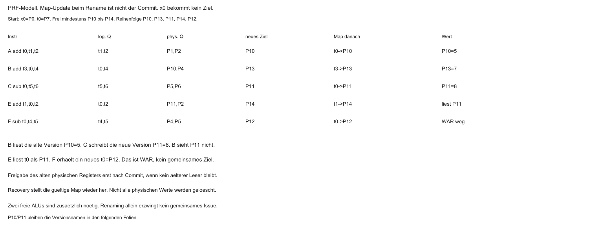
Hardware (schematisch):
add→ schreibtP10(Mappingt0→P10)sub→ schreibtP11(neues Mappingt0→P11)
Getrennte Ziele erlauben unabhängige Ausführung. Zwei belegte ALU-Ports können das Issue trotzdem verhindern.
Reservation Stations
- Nach Renaming: Befehle in Reservation Stations / Issue Queue
- Klassisch Reservation Stations, alternativ eine gemeinsame Issue Queue. Ein einzelner Common Data Bus ist nur das Lehrbild
- Operand bereit reicht nicht: Unit, Port und Auswahlregel müssen passen
Out-of-Order Issue
- Ergebnisse erscheinen auf dem Common Data Bus / Wakeup-Netz
- Wartende Einträge greifen Werte ab; bereite Befehle melden sich
- Scheduler gibt bereite Befehle in freie Units — Reihenfolge \(\neq\) Programmzeile
Problem: Interrupts im Chaos
- Frühe Befehle noch nicht fertig, spätere schon executed
- Interrupt / Exception: architektonisch sichtbarer Zustand muss konsistent sein
- Ohne Schutz: RAM/Register könnten „Zukunft“ schon enthalten — inkonsistent für OS
Reorder Buffer (ROB)
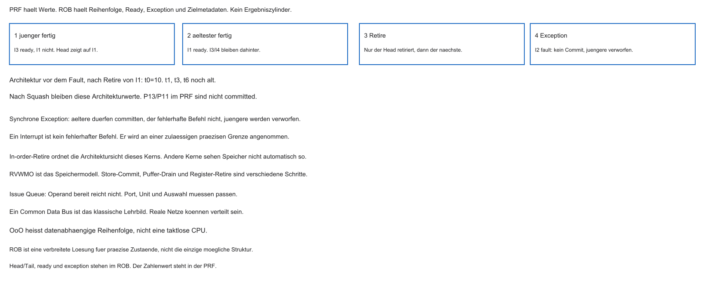
- In diesem PRF-Modell schreibt die ALU in ein physisches Register, nicht in den ROB
- Der ROB führt Reihenfolge, Completion, Exception und Zielmetadaten. Ein result-holding ROB wäre ein anderes, hier nicht verwendetes Modell
Fertige jüngere Befehle stehen in physischen Registern, bis der Head retiriert.
In-Order Commit (Retire)
- Retire nur am ältesten noch nicht retired Befehl, bis zur Retire-Breite
- Dadurch wird der Architektur-Registerzustand sichtbar. Ein Store darf danach noch im Puffer stehen
- Andere Beobachter sehen Speicher nach RVWMO, nicht automatisch in dieser Retire-Reihenfolge
- Spätere fertige Einträge warten, auch wenn ihre PRF-Werte schon stehen
Exceptions und ROB
- Synchrone Exception: ältere Instruktionen dürfen committen. Die fehlerhafte Instruktion committet ihren normalen Effekt nicht. Jüngere Effekte werden verworfen
- Ein asynchroner Interrupt hat keinen fehlerhaften Befehl. Er wird an einer zulässigen präzisen Grenze angenommen
- Recovery stellt das gültige Mapping wieder her
Grenzen von OoO
Warum viele Cortex-M / MCU-Kerne ohne OoO bleiben:
- Transistoren: Renaming, Stations, ROB sind teuer
- Energie: ständiges Wakeup/Scheduling kostet — oft Watt statt µW/mW-Regime
- Determinismus: Laufzeiten schwerer vorherzusagen (Hard Real-Time)
Drei Phasen — Kurzfazit
| Phase | Ordnung | Aufgabe |
|---|---|---|
| Fetch/Decode | in-order | lesen, renaming |
| Execute | out-of-order | Units auslasten |
| Commit | in-order | sichtbar machen, Exceptions |
Aufgabe — Version und Exception
Welche physische Version liest Befehl B? Was bleibt architektonisch gültig, wenn I2 eine synchrone Exception auslöst, nachdem nur I1 retiriert wurde?
Control Hazards
- WAR und WAW kann Renaming entfernen. RAW bleibt. Kontrollfluss ist ein eigener Engpass
- Neuer Engpass: Kontrollfluss (
beqund andere Branches) - Beim Fetch des Branch: welcher nächste PC — Fall-through oder Target?
- Entscheidung oft erst nach dem Vergleich in EX (oder später in tiefen Pipelines)
Kosten eines Pipeline-Flush
- Warten auf die ALU: wenige Bubbles — bei 5 Stufen oft erträglich
- Moderne High-Performance-Kerne: deutlich tiefere Pipelines (Größenordnung: viele Stufen), u. a. für hohe Taktraten
- Falscher Weg → Flush vieler spekulativer Instruktionen
- Misprediction Penalty: oft im Bereich vieler Takte — teuer für IPC
Misprediction: Zahlenbeispiel
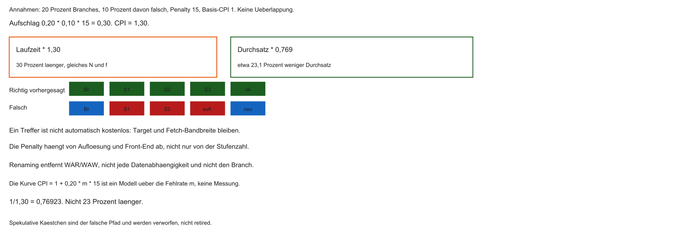
- \(20\,\%\) der Befehle sind Branches
- Misprediction-Rate \(10\,\%\), Penalty \(15\) Takte
- Basis-CPI \(= 1\) (ideale Pipeline ohne andere Stalls)
- CPI-Aufschlag: \(0{,}20 \times 0{,}10 \times 15 = 0{,}30\)
- Effektives CPI \(= 1{,}30\): bei gleichem \(N\) und \(f\) ist die Laufzeit 30 Prozent länger
- Der Durchsatz sinkt auf \(1/1{,}30 \approx 0{,}769\), also rund 23,1 Prozent
Branch Prediction
- Nicht warten — spekulativ den wahrscheinlichen Weg füllen
- Vorhersage typisch schon beim Fetch
- Ein Treffer vermeidet den Flush, ist aber nicht automatisch kostenlos
- Fehlprognose: Flush / Misprediction Penalty
- Ziel: hohe Accuracy (in der Praxis oft deutlich über 90 %)
Statische Vorhersage
Einfache fest verdrahtete Heuristiken:
- Rückwärtssprung oft „taken“ (typisch Schleifenende)
- Vorwärtssprung oft „not taken“ (häufig seltene Fehlerpfade)
Hilfreich, aber für sehr tiefe Pipelines oft zu ungenau.
Dynamische Vorhersage
- Lernen zur Laufzeit aus der Branch-Historie
- Muster: was zuletzt passierte, passiert oft wieder
- Lange Schleifen: nach wenigen Iterationen fast immer korrektes „taken“
Branch History Table (BHT)
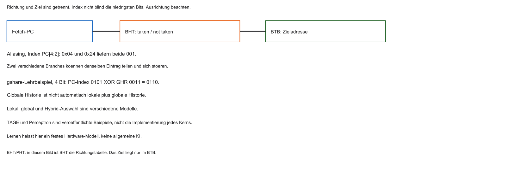
- Kleiner schneller Speicher (oft SRAM) für Predictions
- Index: typisch untere PC-Bits der Branch-Adresse
- Parallel zum Fetch: Eintrag liefert Taken/Not-Taken-Historie
1-Bit-Prädiktor
- Ein Bit: zuletzt Taken (1) oder Not Taken (0)
- Schwachpunkt: verschachtelte Schleifen
- Schleifenende kippt auf Not Taken → nächster Eintritt oft sofort falsch geraten
- Zwei Fehlprognosen pro äußerem Durchlauf sind typisch
2-Bit saturierender Zähler
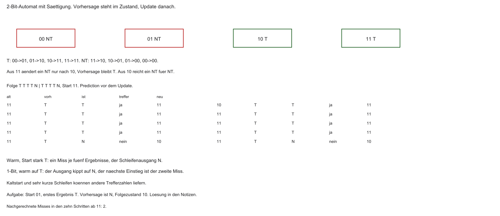
Industrie-Standard: Zustände \(00\)–\(11\)
| Code | Bedeutung | Vorhersage |
|---|---|---|
| \(00\) | Strongly Not Taken | Not Taken |
| \(01\) | Weakly Not Taken | Not Taken |
| \(10\) | Weakly Taken | Taken |
| \(11\) | Strongly Taken | Taken |
Taken: \(+1\) (Sättigung bei \(11\)); Not Taken: \(-1\) (Sättigung bei \(00\)). Die Selbstschleifen an \(00\) und \(11\) stehen im Diagramm.
Hysterese des 2-Bit-Zählers
- Lange Schleife → oft \(11\) (Strongly Taken)
- Einmaliges Ende: \(11 \rightarrow 10\) — Vorhersage bleibt Taken
- Nächster Schleifeneintritt: oft sofort korrekt; Zähler steigt wieder
- Aus einem starken Zustand braucht der Wechsel zwei widersprechende Ergebnisse. Aus einem schwachen Zustand genügt eines
Branch Target Buffer (BTB)
- Taken allein reicht nicht — Zieladresse muss früh bekannt sein
- Decode/Add für Offset oft zu spät für den nächsten Fetch
- BTB: Cache mit (u. a.) zuletzt beobachteter Target-Adresse
- IF: Prediction + bei Taken sofortiger Target aus dem BTB
Globale Historie (Korrelation)
- Branches korrelieren oft im C-Kontrollfluss
- Global History Register (GHR): Bitmuster der letzten \(N\) Outcomes
- gshare ist ein konkretes Modell: PC-Index XOR globale Historie. Das ist nicht automatisch lokale plus globale Historie
- Erkennt Muster über einzelne Sprungstellen hinweg
Fortgeschrittene Prädiktoren
- TAGE und Perceptron-Prädiktoren sind veröffentlichte Beispiele, nicht die Angabe jedes Kerns
- Lernen von Gewichtungen aus der Historie in Hardware
- Praxis: sehr hohe Accuracy bei vielen Workloads — selten, aber teuer bei Misses
Aufgabe — CPI und schwacher Zustand
Was bedeuten CPI 1,30 für Laufzeit und Durchsatz? Der 2-Bit-Zähler steht auf 01, das nächste Ergebnis ist T. Welche Vorhersage gilt?
Spekulative Ausführung
- Spekulativer Fetch braucht kein OoO. Im High-Performance-Modell kommen Prediction und OoO zusammen
- Predictor sagt z. B. „Taken“ → spekulativer Pfad wird gestartet (Issue)
- ALUs rechnen und laden bereits — bevor der Branch architektonisch bestätigt ist
Rechnen auf Verdacht
- Best Case: Prediction korrekt → Arbeit schon (fast) fertig im ROB
- Speicherlatenzen werden hinter Spekulation versteckt
- IPC kann stark steigen, wenn Units nicht idle auf den Branch warten
Rollback bei Misprediction
- Falscher Pfad: spekulative Loads/Rechnungen verwerfen
- ROB hält Ergebnisse zurück — kein vorzeitiges Commit in Architekturzustand
- Squash des spekulativen ROB-Teils, dann korrekten Pfad nachfüllen
Spectre und Meltdown (2018)
- Lange Annahme: Fehlspekulation sei für Software unsichtbar
- Meltdown: spekulativ über Privilege-Grenzen (z. B. Kernel-Daten) — vor allem bestimmte ältere Designs
- Spectre: spekulativ über fehlvorhergesagte Branches / manipulierte Predictor-Zustände
- Gemeinsam: Architekturzustand wird zurückgerollt — Cache-/Timing-Spuren können bleiben
Seitenkanal über den Cache
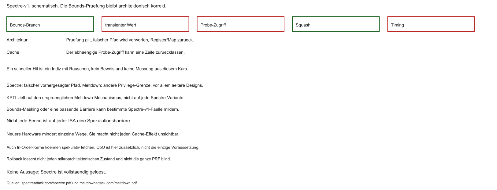
Prinzip (Spectre-artig, stark vereinfacht):
- Die Bounds-Prüfung bleibt architektonisch korrekt
- Der vorhergesagte Pfad läuft transient, bevor die Prüfung wirkt
- Das Geheimnis steuert die Adresse eines folgenden Probe-Zugriffs
- Squash verwirft den Architekturzustand. Die Cache-Spur kann bleiben
Timing als Orakel
- Angreifer misst Zugriffszeiten (Flush+Reload / ähnliche Muster)
- Schneller Hit \(\Rightarrow\) Zeile war im Cache
- Aus der getroffenen Position lässt sich Information über spekulativ genutzte Werte rekonstruieren
- Klassischer mikroarchitektonischer Side Channel
Mitigationen
- KPTI zielt vor allem auf den ursprünglichen Meltdown-Mechanismus
- Passendes Bounds-Masking oder eine geeignete Barriere kann bestimmte Spectre-v1-Fälle treffen. Nicht jede Fence ist auf jeder ISA eine Spekulationsbarriere
- Neuere Hardware mindert einzelne Wege und macht nicht jeden Cache-Effekt unsichtbar
- Spectre ist damit nicht vollständig gelöst
Ausblick Labor: Compiler hilft der Pipeline
- Hardware kompensiert viel (OoO, BHT) — Compiler kann Hazards und Branches reduzieren
- GCC/Clang: Optimierungsstufen
-O0…-O3 - Ziel: bessere IPC, weniger Stalls und teure Control Hazards
Was -O3 typisch tut
-O0ist zum Debuggen gedacht und keine garantierte Zeile-für-Zeile-Übersetzung-O2und-O3erlauben mehr Analysen.-O3garantiert weder Unrolling noch weniger Branches noch kürzere Laufzeit- Ob eine Schleife ausgerollt wird, hängt von Compiler, Version,
-marchund dem Code ab
Trick: Instruction Scheduling
- Problem:
lw→ abhängiger Nutzer → Load-Use-Stall - Compiler schiebt unabhängige Instruktionen in die Lücke (statisches Scheduling)
- C-Reihenfolge \(\neq\) optimale Maschinenreihenfolge
Trick: Loop Unrolling
- Enge Schleifen: viele Branches relativ zur Nutzarbeit
- Unrolling: Iterationen ausrollen → weniger
beq, mehr gerader Code - Trade-off: größere Code-Größe (I-Cache) vs. weniger Control Hazards
Tool: Compiler Explorer (Godbolt)
- Web-Tool: C links, Assembler rechts (live)
- Farbzuordnung C-Zeile → Instruktionen
- Ideal, um
-O1vs.-O3und RISC-V-Output zu vergleichen
Laboridee: Godbolt und Messung
Geplant (Details im Übungsblatt):
- Godbolt zeigt die Übersetzung, kein OoO-Timing
- Ein Ripes-Vergleich gilt nur für das dort gewählte Pipeline-Modell, nicht für eine Desktop-OoO-CPU
- Renode ohne validiertes Mikroarchitekturmodell belegt keine Stall-, Branch- oder OoO-Zahlen
- Flags, Compilerversion und ABI gehören zur Beobachtung. Siehe Übungsblatt
Zusammenfassung Block 7
- Skalare Pipeline: Ideal oft \(\mathrm{IPC} \le 1\)
- Superskalar: mehrere Units / Issues pro Takt
- OoO: Renaming + ROB für dynamisches Scheduling und präzise Exceptions
- Branch Prediction (u. a. 2-Bit, BTB): Flushes vermeiden
- Spekulation beschleunigt — Cache-Seitenkanäle (Spectre/Meltdown) als Kehrseite
- Compiler (
-O3): Scheduling und Unrolling unterstützen die Hardware
Evolution: MCT1 → MCT3
- MCT1: klare In-Order-Pipeline, begrenztes ILP
- MCT3 bisher: Caches, DMA, Bus-Mastering
- Heute: physische Register, OoO, Prediction, Spekulation
- Brücke zur realen High-Performance- und zur energieeffizienten MCU-Welt
Ausblick und Abschluss
- Übungsblatt: Godbolt —
-O0/-O3, Scheduling, Unrolling - Optional: Zyklusvergleich in der Simulation
Vielen Dank — viel Erfolg beim Experimentieren.